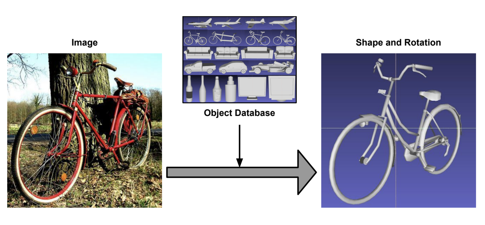

3D Pose Estimation from a single 2D Image
My Master's Project for my MEng in Mathematical Computation involved researching and implementing different methods for predicting 3D poses from images. During the project, I gained knowledge in computer vision, machine learning, designing and training networks and data manipulation.
Abstract:
Building a 3D scene from a 2D image finds an application in many different fields, such as robotics and computer vision. My Project focuses on a subtopic of that, namely the challenge of getting an object's 3D Pose Estimation from a single 2D image. Because of limited amounts of training data, many methods rely on synthetic, rendered images.
The method proposed here works solely on real images, exploiting similarities between different shape classes. It is based on [1] and predicts the closest shape out of a model database and estimates the corresponding 3D rotation from a single image.
This is done in two stages, where in the first stage, a general embedding is learnt from the volumetric representations of the available shapes, and in the second stage an image is mapped to the embedding.
This achieves good results on the 'in the wild' dataset PASCAL3D+.
The proposed method also outputs an uncertainty value and therefore makes it easier to spot rotational ambiguities of the pose. In future, this could for example provide a robot with more accurate instructions on how to interact with the environment, by better assessing its possible actions.
My implementation takes only several hours to train on a single GPU, which makes it ideal for quickly testing new hypotheses.
Find the code on Github.
Read more in my Master Project Report.
[1] Kyaw Zaw Lin, Weipeng Xu, Qianru Sun, Christian Theobalt, and Tat-Seng Chua. Learning a Disentangled Embedding for Monocular 3D Shape Retrieval and Pose Estimation. arXiv e-prints, page arXiv:1812.09899, December 2018.